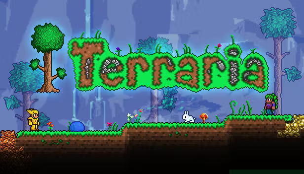

I play games heres my steam account but i will put pictues and reasons why these are my favorite games below.
My Steam Account: Click Here
- Deltarune -
I just played deltarune and let me tell you this is a BANGER. number 1 the story is SO good you can tell toby really enjoyed making this game. 2 the music is a so good you cant FATHOM how good this is on the bottom left is on of the songs from deltarune. Worth every penny.
10/10
- Terraria -
This is one of my favorite games of ALL time. I have roughly 1000 hours in this games and still to this day i can play it. This is a game where its a 2d open world rpg game where you fight bosses and grind. I first played this game when i was like around 7 on my cousins laptop. I have this game on all my consoles to like pc, phone, wii u, and even my 3ds. Their is also a infinte universe of modding for this with the tmodloader and it SUPER easy its litterly on steam itself. Also some great music. worth every penny.